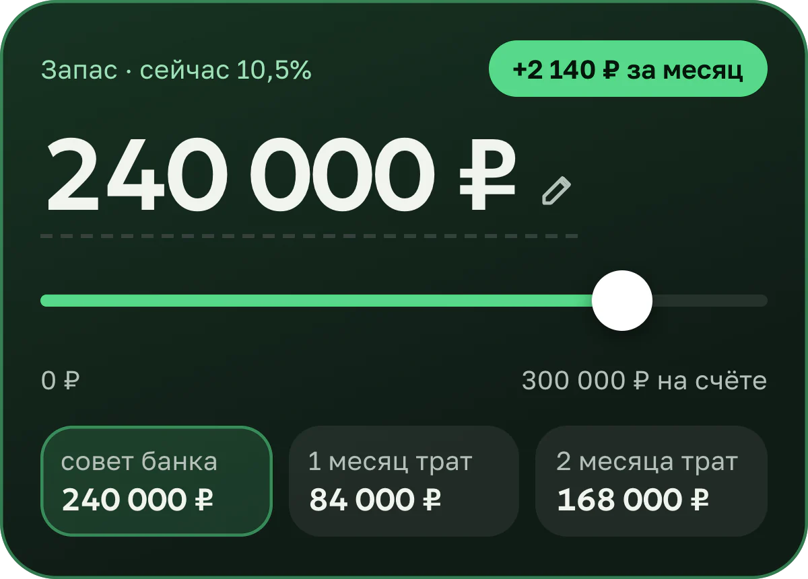

Открытие занимает два шага
Клиент выбирает, сколько оставить в запасе, и включает автопополнение. Сумму можно ввести самому или взять совет банка.
В день открытия ставка 10,5%: сетка от 9,5% и надбавка за приток.
Предложение

Шаг 1. Запас

Шаг 2. Автопополнение